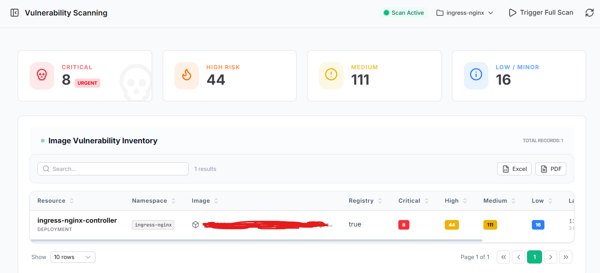

Container Vulnerability Scanning
Konteyner Zafiyet Taraması
Seamlessly scan deployed container images for known Common Vulnerabilities and Exposures (CVEs). Ensure zero-day flaws are caught before they are exploited horizontally across your cluster.
Dağıtılan konteyner imajlarını bilinen Ortak Zafiyetler ve Açıklar (CVE'ler) için sorunsuzca tarayın. Sıfırıncı gün (zero-day) açıklarının, kümeniz içinde yanal olarak sömürülmeden önce yakalandığından emin olun.

Deep Image Metrology
Derin İmaj Metrolojisi
Analyzes image layers to identify vulnerabilities categorized exactly by severity: Critical, High, Medium, and Low. Immediately highlights urgent risks like unpatched application dependencies.
Zafiyetleri önem derecesine göre kesin olarak sınıflandırmak için imaj katmanlarını analiz eder: Kritik, Yüksek, Orta ve Düşük. Yamalanmamış uygulama bağımlılıkları gibi acil riskleri anında vurgular.
Inventory & Export Reports
Envanter ve Dışa Aktarma Raporları
Navigate exactly which workload, image, and namespace is compromised via the complete Image Vulnerability Inventory. Filter results and generate instant PDF and Excel auditing reports.
Eksiksiz "İmaj Zafiyet Envanteri" aracılığıyla tam olarak hangi iş yükünün, imajın ve ad alanının (namespace) tehlikede olduğunu görüntüleyin. Sonuçları filtreleyin ve anında PDF ve Excel denetim raporları oluşturun.
| Security Action | Güvenlik Eylemi | Operational Behavior | Operasyonel Davranış |
|---|---|---|---|
| Trigger Full ScanTam Tarama Tetikle | Initiates an asynchronous, resource-limited background job to update the CVE database and analyze images seamlessly natively inside the cluster.CVE veritabanını güncellemek ve imajları kesintisiz bir şekilde küme içinde analiz etmek için, kaynakları sınırlandırılmış asenkron bir arka plan görevi başlatır. |